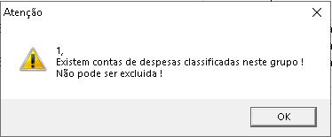
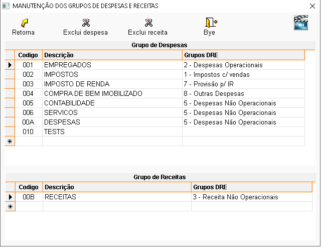

O que é grupo?
É um conjunto de contas, diretrizes e normas que ordena de forma objetiva as informações a serem demonstradas no DRE.
O que é DRE?
A Demonstração do Resultado do Exercício (DRE) tem como objetivo principal apresentar, de forma resumida, o resultado apurado em relação ao conjunto de operações realizadas num determinado período, normalmente, de doze meses.
A DRE está dividida em 6 classes:
- Impostos com vendas: São todos os impostos que incidem sobre as vendas, como ICMS e despesas com ST.
- Despesas operacionais: São todos os gastos desembolsados ou previstos que se relacionam diretamente com o objeto social de uma empresa.
- Despesas não operacionais: São aquelas que não se relacionam diretamente com a natureza do negócio de uma companhia, tais como receita de dividendos e indenizações de seguros.
- Provisão para contribuição social: É um tributo federal que incide sobre o lucro líquido do período-base.
- Provisão para IR: É um cálculo feito antecipadamente prevendo o que será pago de imposto de renda pela empresa.
- Outras despesas: São todos os gastos desembolsados ou previstos que não têm relação direta com o objeto social de uma empresa.
Procedimentos para cadastrar grupos de despesa / receita:
No sistema:
- Para cadastrar um grupo de despesa, clique em descrição, nomeie a despesa e vincule a uma DRE, depois tecle ENTER para salvar.
- Para cadastrar um grupo de receita, clique em descrição, nomeie a receita e tecle ENTER para salvar.
OBS.: Ao teclar ENTER, o código será preenchido automaticamente.
É possível excluir um grupo de despesa / receita?
Somente quando não estiver vinculada a nenhuma movimentação. Caso esteja, será exibida a seguinte mensagem:

É possível alterar um grupo de despesa / receita?
Sim. Selecione a despesa / receita, faça as alterações e tecle ENTER até a próxima linha para salvar.
Tela de cadastros de despesa / receita:
